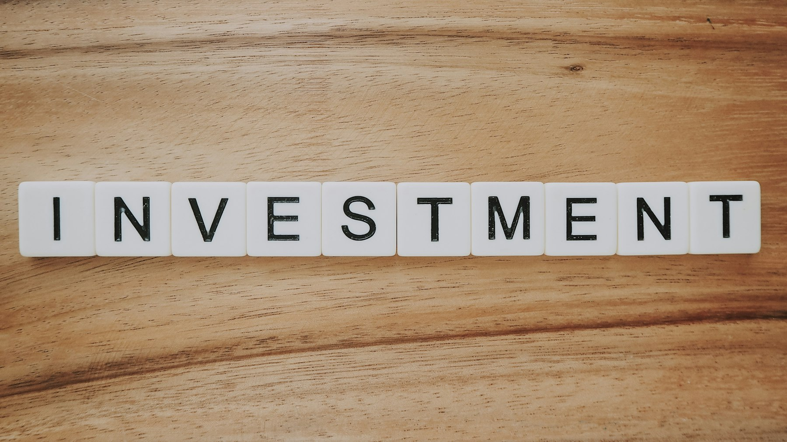

TL;DR
In practice, the real reason most people stall is overwhelm from too many options—not a true lack of knowledge. Most people think researching everything leads to the perfect plan, but watching too long is its own mistake.
The actionable path: use a 3-step method—decide your risk mix, select simple ETFs or funds, and automate monthly investments. Momentum matters more than perfection, especially for beginners building long term wealth.
Why Most New Investors Stall: The Overwhelm of Options
The real reason so many new US and EU investors freeze up isn’t that they’re lazy or afraid of risk. Most people think the problem is just a lack of knowledge—but what actually happens is a flood of investment choices which leads to a different kind of paralysis.
This is for those who scroll through dozens of ETFs, funds, apps, and strategies and end up doing nothing because the tradeoffs all blur together. If you are a beginner, this constant comparison of stocks vs.
funds vs. crypto vs. real estate starts to feel like a maze with no exit.
Here's where it breaks down: You promise yourself you’ll research on the weekend, but every YouTube algorithm and blog offers different angles. US investors confront tax-advantaged retirement accounts like IRAs; EU investors face complex fund structures and "UCITS" wrappers, and most beginners don’t know if these even matter yet.
The mistake isn’t lack of motivation—it’s succumbing to decision fatigue when each new fact collides with the last. This risk of stalling out grows each week you wait. What looks simple—"just invest and grow your money long term"—becomes messy the moment real money is on the line.
Scenario: A first-timer launches a brokerage account, sees thousands of possible ETFs and stocks, opens twenty tabs, and by Sunday night still hasn’t bought anything. They worry that making the wrong pick now will cost them years of growth. The cost is invisible: every week or month delayed is lost compounding.
There are common misconceptions at play: believing you need to know everything before starting, or that the right option will be obvious once you read another article. But in reality, variety in investment choices multiplies the sense of potential mistake. Many who think they’re just being careful are, in practice, missing out on the key benefits of starting early.
This section is for anyone who’s felt that hesitation and wants to move past it—especially if you’ve been watching markets for months but never made that first long term investment decision. The tradeoff here is between acting now with imperfect knowledge or waiting for certainty that never comes. You need a filter, a method, and something other than “just more research.”
The Hidden Trap: Why ‘Just Invest’ Advice Doesn’t Work

If generic investing tips like “buy and hold,” or “just put money in ETFs” actually worked for every beginner, there wouldn’t be so many abandoned accounts after the first market wobble.
The mistake most advice articles make is assuming one-size-fits-all logic. What actually happens: beginners get mismatched to approaches that don’t fit their real risk comfort or financial timeline.
Here’s why this is a bigger trap than it seems.
In practice, this immediately leads to hidden pressures: one person reads about S&P 500 tracker funds and invests 80% of their savings—then panics during the first 10% drop. Another hears about global diversification, ends up holding four expensive managed funds, and wonders why performance lags.
For US investors, following FIRE forums may push you toward 100% stock allocations, which can feel disastrous during a correction if your risk tolerance is lower than you thought. EU beginners might end up in a complex UCITS bond ETF—great in theory, but opaque and illiquid in practice for small starters.
The worst mistake in this context: building a portfolio around someone else’s risk profile. A tool or product, no matter how well recommended, carries hidden tradeoffs if you’re not honest about your own tolerance for volatility. The decision to go with all-index funds or include bonds shouldn’t come from a Reddit thread, but from a 10-minute exercise on how you react to market swings.
Personal risk assessment is the real missing link. If you only want the short answer: before your first dollar or euro is invested, chart out what losing 10%, 20%, or even 30% would feel like in your net worth. Could you sleep at night? If the answer is no, your approach needs more stability, not just higher returns.
Mini-scenario: two friends, both beginners, each put $1,000 into stocks in January. After three months and a 7% dip, one shrugs it off and even buys more. The other feels sick, sells at a loss, and swears off investing for a year.
What was the difference? Not knowledge, but actual risk acceptance. That initial decision to follow generic advice led to a mistake that stopped long term compounding in its tracks. This is the hidden trap most new investors never see coming until after the first stumble.
Crafting Your Unique Blueprint: The Simple 3-Step System
Let’s cut through the static with a system built specifically for beginners who need clarity, not more noise. The 3-step method below moves you from zero to a functioning long term portfolio. Each step involves one key decision, one primary tradeoff, and a clear check for mistake prevention.
1. Decide Your Risk Mix (Asset Allocation) This means choosing a balance of stocks, bonds, and cash that matches your true tolerance for volatility and your time horizon. For a 20-year goal, you might lean 80% stocks and 20% bonds. Want less risk? Try 60% stocks and 40% bonds. The longer your term, the more risk you can typically bear—but only if you can ride out big swings without panic sales.
2. Select Your Investment Vehicles The main debate: index funds/ETFs vs. actively managed funds vs. single stocks. Beginners should usually favor low-fee ETFs (like Vanguard S&P 500 in the US or iShares Core MSCI World UCITS ETF in the EU) for simplicity and proven long term results.
The tradeoff is you give up the chance of hitting a single-stock jackpot. The mistake here: chasing complexity or novelty before mastering basics. Always check fees (TER or expense ratio), liquidity (can you sell when you need to?), and the strength of educational content offered by your platform.
3. Automate Regular Investments (and Review Quarterly) Set up an automatic transfer so money moves from your primary account to your investment platform every week or month. This removes the decision fatigue from timing markets.
Decide on a fixed weekly (or monthly) amount, review your progress every 30 days, and – crucially – do not micro-manage. The tradeoff: automation means you might buy during highs as well as lows, but over time, regular investing (dollar/euro-cost averaging) smooths volatility.
Mistake to avoid: pausing investments during emotional market news—consistency is your biggest ally.
Edge case: If you’re in the EU, watch for platform limitations. Not every online broker offers the same range of ETFs, and some have high minimums or awkward deposit methods. Always read platform reviews—just don’t let “analysis mode” become a new stall point.
This system is not about maximizing returns this month or even this year. It’s about building habits and resilience so you actually arrive at long term gains, not just plans.
Real-World Example: Building Your Portfolio in 30 Days
Here’s what this process looks like over the first four weeks. In practice, the key is to focus on action and reflection, not perfection. Below is a weekly workflow for the typical beginner looking to build a long term portfolio from scratch.
Week 1: Setup, Research, and Account Opening You compare 2-3 reputable brokers. US beginners might weigh Vanguard (low fees, great for retirement), Fidelity (excellent for research), or beginner-centric apps like M1 Finance (dynamic pies, better for visual planners).
EU beginners face the tradeoff between DEGIRO (low costs, wide reach, but limited educational content), Trade Republic (super simple, easy app, limited ETF selection), and Interactive Brokers (do-it-all platform, but overwhelming complexity for some).
Key decision: Prioritize fee structure if you plan to make monthly investments, and watch for local tax reporting features. Mistake: Rushing your account setup before verifying how deposits and withdrawals work—this is where beginners regularly get stuck.
Week 2: Choose Asset Mix and First Fund(s) Allocate your cash: perhaps 70% to a world equity ETF, 30% to a government bond fund. Scenario: If you plan to invest $200 monthly, you’d send $140 to the stock ETF, $60 to the bond ETF. Consequence: Even if stocks fall 5% in a week, your bond portion offers stability.
Decision: Do you want to rebalance monthly or quarterly? Frequent beginners’ mistake: forgetting to rebalance after six months, leading to a portfolio that drifts beyond your risk tolerance.
Week 3: Automatic Investment Setup Enable auto-debit from your checking account on payday. Don’t trust memory—set the rule on your platform (or bank). For example: $50 each Monday. This removes emotional decision-making each week. Use watchlists or notification features to stay engaged but avoid over-trading.
Week 4: First Portfolio Review and Adjustment After 30 days, open your statement and track whether your investments matched your plan. Scenario: Let’s imagine equities fell 4%; your portfolio is down $8 on $200, but your monthly investment just bought more shares cheaper. Mistake: Panic-selling now turns a normal dip into a permanent loss.
Where this breaks down: Most beginners skip the one-month review. The result? Small mistakes compound, allocations drift, and nobody catches it. Monthly reviews are your anchor.
If you want to choose now, don’t overthink the platform. For total simplicity: US—Vanguard; EU—Trade Republic (for simplicity) or DEGIRO (for reach). Choose one, open it, and begin.
Avoiding Common Pitfalls: What Can Derail Your Investments
The final piece of building a resilient long term portfolio is knowing what causes most plans to unravel. The tradeoff between discipline and flexibility is felt most strongly the first time markets spike or sink. Most beginners’ mistake is not external—they’re internal: revising your plan during emotional weeks, redistributing assets after a big market headline, or chasing hot sectors after one news cycle.
Scenario: An investor checks their account every day during a rough month, sees a 7% drop, panics, and moves half their holdings to cash. The result is locking in a loss and missing the next rebound.
The decision to move in and out of markets is almost always more damaging than volatility itself. This is especially true for long term portfolios, where you need negative weeks and months to unlock higher long term rewards.
It’s critical to watch two fronts: risk management and emotional decision triggers. Set limits for how much loss you’re willing to accept in a month (say 10%), but remind yourself that volatility is expected, not a sign you made a mistake in your system. Automate as much as you can—automation makes it harder to make a panic-driven mistake on a Sunday evening.
Edge case: If you expect a major life change (like a move between the US and EU, or a job loss), you might need to become temporarily more conservative. Pause only if your real-world scenario changes, not just because the market does.
Best fit if you are a beginner who can commit to monthly reviews, tolerate some volatility, and value learning as you go more than chasing short-term performance.
Not ideal for: those unwilling to spend at least 15 minutes monthly monitoring their allocations, or anyone hoping to beat the market with active trading from day one. In those cases, it’s better to wait and build your investment discipline with a simulated account first.
A clear next step: set up your 30-day cadence now. Put a calendar reminder to review, rebalance, and reflect on what you’ve learned. If you don’t act, the cost is compounding hesitation and missed growth—something no beginner wants.
The big decision: what’s more important to you—control or consistency? The strongest portfolios put systems above emotions. That’s the foundation for long term success.
FAQ
How much should I invest to start a long-term portfolio?
You can begin with as little as $25–$100 per month, depending on your chosen platform’s minimums. For beginners in the US and EU, the most important factor is committing to consistent, regular investments, regardless of amount. Keep initial size comfortable enough that short-term volatility will not trigger a panic decision.
What are the best investment vehicles for beginners?
Index funds and broad-market ETFs are generally best for beginners because of their low fees, instant diversification, and hands-off management. US starters might look at Vanguard’s S&P 500 ETF or Total Stock Market ETF; EU starters should check low-cost UCITS ETFs like iShares Core MSCI World. Individual stocks can work, but should only be a small portion until you’re comfortable with volatility.
How often should I review or rebalance my portfolio?
A good rule is to review your allocations at least every 30 days, with a more formal rebalance every quarter or twice per year. This helps you catch allocation drift, reinforce risk checks, and prevent emotional blunders after news headlines. Beginners benefit most from setting a recurring monthly review in their digital calendar.
Should I change my portfolio when the market is volatile?
Avoid changing your entire allocation in reaction to short-term market swings. Volatility is a feature of investing, not a mistake or failure in your system. Review your plan monthly, but only adjust if your personal situation or risk tolerance has genuinely changed, not because of market headlines.
This article is regularly reviewed for practical usefulness and is updated as regulations, platforms, and practical investing realities change in both the US and EU.
Next step
Use the article as a decision point, not just reading material. Your next system matters more than more browsing.
Search more articles
Find related tools, workflows, and guides.
Photo credits
- Photo 1: Nick Chong via Unsplash
- Photo 2: Precondo CA via Unsplash
- Photo 3: Kelly Sikkema via Unsplash
- Photo 4: Eric Rothermel via Unsplash
- Photo 5: Roberto Júnior via Unsplash